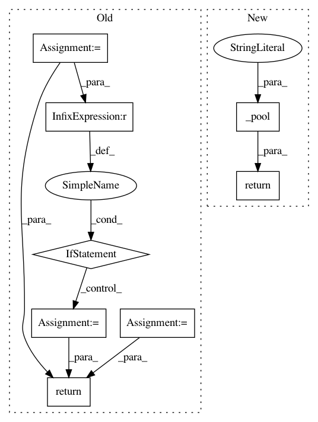

c72e29f1d799bde43efe0df9485ba62519e9b09c,onnx_tf/backend.py,TensorflowBackend,handle_average_pool,#Any#Any#Any#,283
Before Change
@classmethod
def handle_average_pool(cls, node, input_dict):
x = input_dict[node.inputs[0]]
x_rank = tf.rank(x)
data_format = "NCDHW"
if x_rank == 1:
data_format = "NCW"
elif x_rank == 2:
data_format = "NCHW"
kernel_shape = node.attrs["kernel_shape"]
pads = "SAME" if node.attrs["pads"] else "VALID"
strides = node.attrs["strides"]
return [tf.nn.pool(x, kernel_shape, "AVG", pads, strides=strides,
data_format=data_format)]
@classmethod
def handle_batch_normalization(cls, node, input_dict):
x = input_dict[node.inputs[0]]
After Change
@classmethod
def handle_average_pool(cls, node, input_dict):
return cls._pool(node, input_dict, "AVG")
@classmethod
def handle_batch_normalization(cls, node, input_dict):
x = input_dict[node.inputs[0]]
In pattern: SUPERPATTERN
Frequency: 4
Non-data size: 8
Instances
Project Name: onnx/onnx-tensorflow
Commit Name: c72e29f1d799bde43efe0df9485ba62519e9b09c
Time: 2017-10-27
Author: acjacob@dccxl001.pok.ibm.com
File Name: onnx_tf/backend.py
Class Name: TensorflowBackend
Method Name: handle_average_pool
Project Name: onnx/onnx-tensorflow
Commit Name: 76623579f3259ebefb710a9b013b055f4a7864d1
Time: 2017-10-27
Author: acjacob@dccxl001.pok.ibm.com
File Name: onnx_tf/backend.py
Class Name: TensorflowBackend
Method Name: handle_average_pool
Project Name: tensorflow/benchmarks
Commit Name: 267d7e81977f23998078f39afd48e9a97c3acf5a
Time: 2017-10-05
Author: tobyboyd@google.com
File Name: scripts/tf_cnn_benchmarks/convnet_builder.py
Class Name: ConvNetBuilder
Method Name: mpool
Project Name: tensorflow/benchmarks
Commit Name: 267d7e81977f23998078f39afd48e9a97c3acf5a
Time: 2017-10-05
Author: tobyboyd@google.com
File Name: scripts/tf_cnn_benchmarks/convnet_builder.py
Class Name: ConvNetBuilder
Method Name: apool